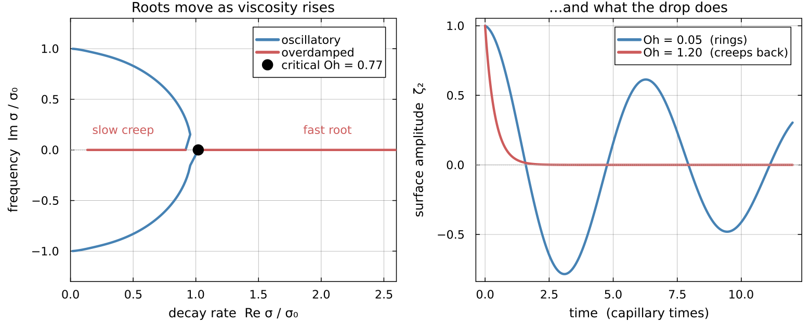

The Free Viscous Drop
A drop left alone does not stay deformed. Surface tension pulls it back, it overshoots, and viscosity bleeds the motion away. This part asks the only question about that process which has a closed answer: at what rate?
The question is an eigenvalue problem
Everything on this page is the linearised problem: the Navier-Stokes equations expanded about a sphere at rest, with the advective term dropped and the boundary conditions transferred to r = R. The home page gives the exact statement and says what the linearisation removes. Reid's result is a property of that linear system, and the closed-form answer below exists because of it.
Variational Mechanics reduced the drop to
\[\bm M\ddot{\bm a} + \bm C\dot{\bm a} + \bm G\bm a = \bm Q .\]
Set $\bm Q = 0$: no wall, no forcing, a drop ringing on its own.
For a Newtonian fluid the three matrices are constants, because $\bm C$ is built from a viscosity that does not depend on the solution. That is what makes the system linear with constant coefficients, and it is a genuine restriction rather than a formality: in Part IV the viscosity becomes a function of the local shear rate, $\bm C$ has to be rebuilt at every instant, and none of what follows survives. This part is the Newtonian case precisely because it is the case that can be solved.
With constant coefficients the solution space is spanned by exponentials. Substituting $\bm a(t)=\bm a_0 e^{-\sigma t}$ gives
\[\boxed{\;\left(\sigma^2\bm M - \sigma\bm C + \bm G\right)\bm a_0 = 0\;}\]
a quadratic eigenvalue problem, solved in the code by decay_rates. Its roots are the decay rates and linearity makes the general motion their superposition.
Why the angular modes never mix
Reid solves the same problem in the continuum, and one structural fact makes that possible. It is easy to lose inside the algebra, so it is worth having in advance.
The linearised operator is built from $\nabla^2$ and the gradient, and a sphere has no preferred direction, so the operator is invariant under rotations. It therefore commutes with the angular Laplacian $\nabla^2_{\text{ang}}$. Commuting operators are simultaneously diagonalisable, and the eigenfunctions of $\nabla^2_{\text{ang}}$ are the spherical harmonics:
\[\nabla^2_{\text{ang}}\,Y_l^m = -l(l+1)\,Y_l^m .\]
So a common eigenbasis exists, and in it the problem block-diagonalises by $l$. Each angular mode evolves on its own, with no coupling to any other, and the full three-dimensional problem collapses to one radial ordinary differential equation per $l$. Separation of variables is not a trick tried in hope here; it is a consequence of the symmetry, and the ansatz $f(r)Y_l^m(\theta,\varphi)e^{-\sigma t}$ is a statement about the eigenbasis rather than a guess at the answer.
Two things break that symmetry later. The wall picks out a direction, so Contact couples every mode to every other through the film pressure. A state-dependent viscosity destroys the commutation itself, which is the subject of Part IV. Both are why an exact answer exists only here.
What this part is for
Part I solves this eigenvalue problem approximately, on $K$ trial functions per mode. This part solves it exactly. That gives two things used downstream: the benchmark against which Resolution and Convergence measures truncation error, and the exact radial profile, a polynomial plus a spherical Bessel function, which is the structure Part I's radial basis is built to approximate.
Notation is collected in Appendix A. $\sigma$ is the complex decay rate throughout, with $\mathrm{Re}\,\sigma>0$ meaning decay; surface tension is $\gamma$ here as everywhere else on the site.
function legendre_P(l::Int, x)
l == 0 && return one(x)
l == 1 && return x
Pm1, P = one(x), x
for n in 1:(l-1)
P, Pm1 = ((2n + 1) * x * P - n * Pm1) / (n + 1), P
end
P
endThe physical setup
A drop of density $\rho$, viscosity $\mu=\rho\nu$, and surface tension $\gamma$ sits in equilibrium as a sphere of radius $R$. With the external pressure set to zero, the Young-Laplace equation (the pressure jump across an interface with principal curvatures $1/R_1+1/R_2$ is $\gamma(1/R_1+1/R_2)$, here $R_1=R_2=R$) fixes the internal equilibrium pressure:
\[p_0 = \frac{2\gamma}{R}.\]
We perturb the surface with a single spherical-harmonic mode:
\[r = R\left[1 + \epsilon(t)\, Y_l^m(\theta,\varphi)\right], \qquad \epsilon(t) = \epsilon_0 e^{-\sigma t}, \qquad \epsilon_0 \ll 1,\]
and look for the complex decay rate $\sigma$ (the sign convention is $\mathrm{Re}(\sigma)>0$ for decay – Reid follows Chandrasekhar's convention here, not the more common $e^{+i\omega t}$, specifically so that a damped oscillation is $\sigma=\lambda+i\omega_d$ with both $\lambda,\omega_d>0$ real and positive; in the inviscid limit $\lambda\to0$ and $\sigma\to\pm i\omega_d$).
Here $Y_l^m(\theta,\varphi)=P_l^m(\cos\theta)e^{-im\varphi}$ in the unnormalized convention. The normalization never matters: every equation below is linear and homogeneous in $Y_l^m$, so the constant divides out, and the characteristic equation this page builds toward is independent of the choice.
In the complete absence of viscosity, Rayleigh and Lamb's classical result gives the oscillation frequency of a spherical-harmonic mode of order $l$ as
\[\boxed{\;\sigma_{l;0}^2 = l(l-1)(l+2)\,\frac{\gamma}{\rho R^3}\;}\]
This is real (undamped) and independent of the azimuthal order $m$. The $l=2$ case is the oblate-prolate wobble familiar from a falling raindrop or a drop shaken loose from a tap.
It does not have to be imported. It is the inviscid limit of the pencil in the opening: drop $\bm C$, and $\sigma^2\bm M\bm a_0=-\bm G\bm a_0$ is an undamped oscillator whose frequency is set by the ratio of the surface energy to the kinetic energy. Variational Mechanics gives both, with $G\propto(l-1)(l+2)$ from the excess area and the remaining factor $l$ from the inertia of the potential flow. Reid takes the formula as given, and so does this page.
Viscosity enters the final answer only through this one number, $\sigma_{l;0}$.
Two sanity checks on the formula itself, before building anything on it. First, dimensions: it should be a rate squared, and $[\gamma/(\rho R^3)] = [\mathrm{N/m}]\,/\,[\mathrm{kg\,m^{-3}}\cdot\mathrm{m^3}] = [\mathrm{kg\,s^{-2}}]/[\mathrm{kg}] = [\mathrm{s^{-2}}]$ – consistent. Second, the $l=1$ mode is a rigid translation of the whole drop, which has no restoring force (translating a sphere changes neither its shape nor its surface energy), so $\sigma_{1;0}^2$ must vanish identically. It does.
The linearised equations, and the pressure field
Departures from equilibrium obey the linearized incompressible Navier-Stokes equations,
\[\frac{\partial \bm u}{\partial t} = -\nabla\frac{\delta p}{\rho} - \nu\,\nabla\times\nabla\times\bm u, \qquad \nabla\cdot\bm u = 0.\]
(For incompressible flow $\nabla\times\nabla\times\bm u = -\nabla^2\bm u$, so this is the same as the more familiar $\partial_t\bm u = -\nabla(\delta p/\rho)+\nu\nabla^2\bm u$; both forms appear in the literature, and we use the second from here on.) With every field varying as $e^{-\sigma t}$ (so $\partial_t \to -\sigma$),
\[-\sigma\bm u = -\nabla\frac{\delta p}{\rho} + \nu\nabla^2\bm u.\]
This is the equation everything downstream is built from.
Pressure satisfies Laplace's equation. Taking the divergence of this equation: $\nabla\cdot\bm u=0$ kills the left side, and $\nabla\cdot(\nabla^2\bm u) = \nabla^2(\nabla\cdot\bm u) = 0$ kills the viscous term (divergence and Laplacian commute), leaving
\[\nabla^2\!\left(\frac{\delta p}{\rho}\right) = 0.\]
We need the solution with angular dependence $Y_l^m$ that is regular at the origin. Writing $\delta p/\rho = \epsilon\,f(r)\,Y_l^m$, the scalar Laplacian formula from the angular eigenvalue result turns this into the radial ODE $f'' + (2/r)f' - l(l+1)f/r^2 = 0$, whose general solution is $f = Ar^l + Br^{-(l+1)}$ for symbolic $l$. Regularity at $r=0$ requires $B=0$, so with $x=r/R$,
\[\frac{\delta p}{\rho} = \epsilon\, P_0\, x^l\, Y_l^m,\]
for some constant $P_0$ (dimensions of velocity squared) fixed later by the boundary conditions.
The pressure gradient is a poloidal, divergence-free field with angular structure $Y_l^m$, so by the poloidal decomposition it is entirely determined by a single scalar function $\Pi(x)$ through its radial component. Reid's defining relation for that scalar is
\[\left(\nabla\frac{\delta p}{\rho}\right)_r = \epsilon_0\,\sigma^2 R\,\frac{\Pi(x)}{x^2}\,Y_l^m\,e^{-\sigma t},\]
and computing the same radial derivative explicitly from $\delta p/\rho = \epsilon P_0 x^l Y_l^m$ gives
\[\left(\nabla\frac{\delta p}{\rho}\right)_r = \frac{\partial}{\partial r}\!\left(\epsilon P_0 x^l Y_l^m\right) = \epsilon_0 e^{-\sigma t}\,P_0\,\frac{l}{R}\,x^{l-1}\,Y_l^m.\]
Matching the two forces $\Pi(x) = \Pi_0 x^{l+1}$ with
\[\Pi_0 = \frac{l}{\sigma^2 R^2}\,P_0.\]
$P_0$ (equivalently $\Pi_0$) is the second of the three constants the boundary conditions will pin down; the third, $C$, appears once the velocity field enters next.
The radial equation for the velocity
This is the technical heart of the whole problem: one ODE that packages up the entire viscous, incompressible flow field consistent with the linearized momentum equation.
Since the pressure gradient is purely poloidal, the momentum equation forces the velocity to be purely poloidal too (nothing drives a toroidal part – the poloidal decomposition). We write the radial velocity as
\[u_r = \epsilon_0\,\sigma R\,\frac{U(x)}{x^2}\,Y_l^m\,e^{-\sigma t}\]
(the $1/x^2$ scaling is conventional – it is exactly what makes the final ODE for $U$ take the clean Bessel-equation form derived in Appendix D.2, which is the entire point of choosing it). Write $G(x)=U(x)/x^2$, so $u_r \propto G(x)$.
The momentum equation above carries a single viscous term, $\nu\nabla^2\bm u$: a scalar, constant $\nu$ multiplying the Laplacian of the velocity. That is the Newtonian constitutive law – stress proportional to strain rate, with a viscosity that does not depend on the flow itself. A shear-thinning fluid (Carreau-Yasuda) replaces that scalar with a viscosity that depends on the local strain rate, which in general no longer factors out of the Laplacian this cleanly. Everything in this section and the next – the ODE for $U$, both stress boundary conditions, and the characteristic equation itself – rests on this one substitution and does not carry over unmodified. What a change of rheology costs spells out which parts survive a change of rheology and which do not.
For an axisymmetric poloidal field, the incompressibility constraint lets you eliminate the angular ($u_\theta$) part of the vector Laplacian entirely in favor of radial derivatives of $u_r$, giving
\[\left[\nabla^2\bm u\right]_r = \nabla^2 u_r + \frac{2}{r^2}u_r + \frac{2}{r}\frac{\partial u_r}{\partial r}.\]
We derive this from two standard, textbook spherical-coordinate operator formulas (these are coordinate-system facts, not specific to this problem, so we cite them the way we'd cite "the Laplacian in spherical coordinates has this form" – but everything built from them below is checked). For an axisymmetric field with no $\varphi$-dependence and no $u_\varphi$, the raw r-component of the vector Laplacian is
\[\left[\nabla^2\bm u\right]_r = \nabla^2 u_r - \frac{2}{r^2}u_r - \frac{2}{r^2}A, \qquad A \equiv \frac{1}{\sin\theta}\frac{\partial(\sin\theta\,u_\theta)}{\partial\theta},\]
and incompressibility ($\nabla\cdot\bm u=0$) in the same coordinates is
\[\frac{1}{r^2}\frac{\partial(r^2 u_r)}{\partial r} + \frac{1}{r}A = 0.\]
Solving the second for $A$ gives $A = -(2u_r + r\,\partial_r u_r)$ – purely in terms of $u_r$'s radial dependence, no explicit $u_\theta$ needed. Substituting this into the raw formula reproduces the target formula above exactly, treating $A$, $u_r$, and $\partial_r u_r$ as independent symbols related only by that one incompressibility identity.
Substituting $u_r=\sigma R\,G(x)\,Y_l^m$ (the $\epsilon_0 e^{-\sigma t}$ prefactor cancels throughout, exactly as in the source) and using the scalar Laplacian formula (the angular eigenvalue result) for $\nabla^2 u_r$, all three terms – the scalar Laplacian, $2u_r/r^2$, and $(2/r)\partial_r u_r$ – combine into a single operator on $G$:
\[\left[\nabla^2\bm u\right]_r \;\propto\; G'' + \frac{4}{x}G' + \frac{2-l(l+1)}{x^2}G.\]
The r-component of the momentum equation (after canceling $Y_l^m e^{-\sigma t}$ and using $x=r/R$, $q^2=\sigma R^2/\nu$) is then
\[-q^2 G = -\frac{P_0\,l\,x^{l-1}}{\sigma\nu} + G'' + \frac{4}{x}G' + \frac{2-l(l+1)}{x^2}G.\]
Now substitute $G = U/x^2$ – this is where the $1/x^2$ scaling earns its keep. Differentiating $G = U/x^2$ twice, $G' = U'/x^2 - 2U/x^3$ and $G'' = U''/x^2 - 4U'/x^3 + 6U/x^4$, and substituting, every term in $1/x^3$ and $1/x^4$ cancels and what is left is
\[G'' + \frac{4}{x}G' + \frac{2-l(l+1)}{x^2}G \;=\; \frac{1}{x^2}\left[\,U'' - \frac{l(l+1)}{x^2}U\,\right],\]
exactly, for every $l$.
Multiplying the momentum equation through by $x^2$ and using the pressure solution $P_0 = \sigma^2 R^2 \Pi_0/l$ (the linearised equations) to write $P_0 l/(\sigma\nu) = \sigma R^2\Pi_0/\nu = q^2\Pi_0$, the momentum equation becomes exactly Reid's Eq. 9 – the single equation that packages up the entire linearized, viscous, incompressible flow problem:
\[\left[\frac{d^2}{dx^2} - \frac{l(l+1)}{x^2} + q^2\right] U(x) = q^{2} ~ x^{1 + l} ~ \Pi_{0}\]
Solving it
Reid's Eq. 9 is a linear, second-order, inhomogeneous ODE. Its general solution is a particular solution (matching the $x^{l+1}$ forcing) plus the general solution of the homogeneous equation.
Particular solution. Try $U_p = \Pi_0 x^{l+1}$ directly. The $l(l+1)/x^2$ and $q^2$ pieces of $U_p''$ cancel the corresponding pieces on the left, leaving exactly the $q^2\Pi_0 x^{l+1}$ forcing on the right – so it is an exact solution, for symbolic $l$ and $q$.
Homogeneous solution. The homogeneous equation $U''-l(l+1)U/x^2+q^2U=0$ is Appendix D.2's ODE with $x\to qx$: writing $U_h = x\,v(qx)$, the chain rule gives $U_h'=v+xqv'$, $U_h''=2qv'+xq^2v''$, and substituting $v$ satisfying the spherical Bessel equation at argument $z=qx$ ($v''=-\tfrac{2}{z}v'-(1-\tfrac{l(l+1)}{z^2})v$) collapses the whole thing to zero. Nothing about $j_l$ is used beyond the equation it satisfies, so the statement holds for any solution of the spherical Bessel equation, and
\[U_h'' - \frac{l(l+1)}{x^2}U_h + q^2 U_h = 0 \qquad\Longleftarrow\qquad U_h = C\,x\,v(qx), \quad v \text{ spherical Bessel of order } l ,\]
for any constant $C$. This is the same substitution used in Appendix D.2.
The other homogeneous solution – built from the second-kind spherical Bessel function $n_l$, which diverges as $z\to0$ – is discarded on regularity grounds, the same argument as the pressure field's $B$-term in the linearised equations. The general solution is therefore
\[C ~ x\,j_l(qx) + x^{1 + l} ~ \Pi_{0}\]
where $C$ and $\Pi_0$ are fixed by the three boundary conditions we derive next.
The three boundary conditions
Three physical conditions at the drop surface ($x=1$) fix the two constants $C, \Pi_0$ and, together, produce the characteristic equation.
BC1: Kinematic condition
The fluid at the surface must move with the surface – the surface isn't a permeable membrane. The surface itself moves at $\partial r/\partial t|_{\text{surface}} = -\sigma R\epsilon_0 e^{-\sigma t}Y_l^m$ (differentiating the surface ansatz directly), while the fluid's radial velocity there is $u_r|_{x=1} = \epsilon_0\sigma R\,U(1)\,Y_l^m e^{-\sigma t}$. Equating the two and canceling the common prefactor $\epsilon_0\sigma$ gives, exactly,
\[U(1) = -1.\]
The condition is imposed at $x=1$, the undeformed surface: evaluating it at the true deformed surface $r=R[1+\epsilon Y_l^m]$ would only add $O(\epsilon^2)$ corrections, negligible at this linear order.
BC2: Tangential stress condition
At a free surface (no exterior viscous fluid), the tangential viscous stress must vanish:
\[\tau_{r\theta} = \mu\left[r\frac{\partial}{\partial r}\!\left(\frac{u_\theta}{r}\right) + \frac{1}{r}\frac{\partial u_r}{\partial\theta}\right] = 0 \qquad \text{at } x=1.\]
This needs $u_\theta$, which hasn't shown up until now. For an axisymmetric poloidal field, the standard Stokes stream function $\psi(r,\theta)$ gives $u_r=(1/(r^2\sin\theta))\,\partial\psi/\partial\theta$ and $u_\theta=-(1/(r\sin\theta))\,\partial\psi/\partial r$. Writing $u_r=f(r)P_l(\cos\theta)$ and integrating in $\theta$ (using the standard Legendre recurrence $(2l+1)P_l=P_{l+1}'-P_{l-1}'$) gives
\[u_\theta = \frac{g(r)}{\sin\theta}\Big[P_{l+1}(\cos\theta)-P_{l-1}(\cos\theta)\Big], \qquad g(r)\equiv\frac{2f(r)+rf'(r)}{2l+1}.\]
Substituting both into $\tau_{r\theta}$ and using a second standard recurrence, $(2l+1)(1-x^2)P_l'(x)=l(l+1)[P_{l-1}(x)-P_{l+1}(x)]$, every term collapses onto the single common angular factor $\sin\theta\,P_l'(\cos\theta)$ – exactly the shape a genuine tangential-stress condition should have – times a purely radial coefficient. Setting that coefficient to zero at $r=R$ turns out to be exactly $\mathcal{L}_2[U]=0$:
\[\mathcal{L}_2[U] \equiv \left[\frac{d^2}{dx^2} - \frac{2}{x}\frac{d}{dx} + \frac{l(l+1)}{x^2}\right]U = 0 \qquad\text{at } x=1,\]
so BC2, usually quoted in this operator form, follows from the stream-function representation directly.
Both Legendre recurrences hold for $l=2,3,4,5$ against the Bonnet-built polynomials of the angular eigenvalue result, so the stream-function ansatz does produce a pure tangential-stress condition proportional to $\mathcal{L}_2[U]$.
Building $\tau_{r\theta}/\mu$ directly from the stream function (concrete $l$, abstract radial function $f(r)$) makes the collapse explicit: $\tau_{r\theta}=0$ at $r=R$ is equivalent to
\[R^2 f''(R) + 2R f'(R) + \big[l(l+1)-2\big] f(R) = 0,\]
and imposing that single relation among $f(R)$, $f'(R)$, $f''(R)$ makes $\tau_{r\theta}$ vanish identically in $\theta$, not merely at one angle – for $l=2,\dots,6$.
Finally, translate $f(r)$'s condition into $U(x)$. Write $f(r)=\kappa\,G(r/R)$ for some overall constant $\kappa$ (which cancels, since the condition above is linear and homogeneous in $f, f', f''$), with $G(x)=U(x)/x^2$ from the radial equation. The chain rule gives $f(R)=\kappa G(1)$, $f'(R)=\kappa G'(1)/R$, $f''(R)=\kappa G''(1)/R^2$, so the condition becomes $G''(1)+2G'(1)+[l(l+1)-2]G(1)=0$, which in turn is exactly $\mathcal{L}_2[U]|_{x=1}=U''(1)-2U'(1)+l(l+1)U(1)=0$ for symbolic $l$. BC2's operator is thus derived end to end: stream function $\to$ $\tau_{r\theta}=0$ $\to$ the $f$-ODE $\to$ the $G$-ODE $\to$ $\mathcal{L}_2[U]=0$.
Evaluating $\mathcal{L}_2$ on the two pieces of the general solution gives, exactly and for symbolic $l$,
\[\mathcal{L}_2[U_p] = 2(l-1)(l+1)\,\Pi_0\,x^{l-1}, \qquad \mathcal{L}_2[U_h]\big|_{x=1} = C\!\left[-q^2 j_l(q) + 2(l^2+l-1)j_l(q) - 2q\,j_l'(q)\right],\]
the second after eliminating $v''$ via the spherical Bessel equation at $z=q$, and matching Reid's own stated coefficient. Setting the sum $\mathcal{L}_2[U_h]|_{x=1} + \mathcal{L}_2[U_p]|_{x=1} = 0$ (BC2) gives one linear relation between $C$ and $\Pi_0$, used in the characteristic equation.
BC3: Normal stress condition
The most involved of the three: it couples pressure, viscous normal stress, and the curvature of the deformed surface through surface tension. The radial normal stress inside the drop is $-p_{rr} = p + \delta p - 2\mu\,\partial u_r/\partial r$, and the free-surface condition is $-p_{rr} = \gamma(1/R_1+1/R_2)$.
To first order in $\epsilon$, the mean curvature of the perturbed surface is
\[\frac{1}{R_1}+\frac{1}{R_2} = \frac{1}{R}\Big[2 + (l-1)(l+2)\,\epsilon\,Y_l^m\Big].\]
The $2/R$ piece is just the equilibrium curvature (Young-Laplace, the setup); the $(l-1)(l+2)$ factor is the same combination that appears in the inviscid frequency $\sigma_{l;0}^2$ – both come from the curvature response to a harmonic deformation, so this is a consistency check worth noting, not a coincidence.
Where this comes from. The starting point is the standard linearized mean-curvature formula of differential geometry, for a nearly-spherical surface $r=R+\zeta(\theta,\varphi)$ with $\zeta$ small:
\[\frac{1}{R_1}+\frac{1}{R_2} = \frac{2}{R} - \frac{1}{R^2}\Big[2\zeta + \Delta_\Omega\zeta\Big].\]
$\Delta_\Omega$ here is the Laplace-Beltrami operator on the unit sphere, which is dimensionless. It is not the same object as Section 2.1's $\nabla^2_{\text{angular}}$, which carries a $1/r^2$ because it is the angular piece of the full three-dimensional Laplacian. The two agree on the only property used here – both have eigenvalue $-l(l+1)$ on $Y_l^m$ – but confusing them costs a factor of $R^2$, and the $1/R^2$ prefactor above is where that factor has already been accounted for.
The algebraic collapse from there is immediate: with $\zeta=\epsilon R\,Y_l^m$ and the angular eigenvalue property of Section the angular eigenvalue result, this reproduces the boxed formula above exactly, for symbolic $l$.
At $O(\epsilon^0)$ the equilibrium Young-Laplace balance is automatically satisfied. At $O(\epsilon^1)$, using the pressure solution ($\delta p|_{x=1}=\rho\epsilon P_0 Y_l^m$) and $u_r=\epsilon_0\sigma R\,G(x)Y_l^m e^{-\sigma t}$ for the viscous term, the one genuinely computational piece is $\partial u_r/\partial r$ at the surface, which needs $d(U/x^2)/dx$ at $x=1$. That equals $U'(1)-2U(1)$ exactly.
Dividing through by $\rho\epsilon Y_l^m$ and using $\mu=\rho\nu$, BC3 becomes
\[\frac{(l-1)(l+2)\,\gamma}{\rho R} \;=\; P_0 - 2\nu\sigma\bigl[\,U'(1) - 2U(1)\,\bigr],\]
the only equation containing the surface tension $\gamma$ explicitly. Reid's key move, next, is to rescale so that $\gamma$ (and $\rho$) drop out entirely, leaving a problem in terms of two purely dimensionless numbers.
The characteristic equation
Eliminating the surface tension
Define $\alpha^2 \equiv \sigma_{l;0}R^2/\nu$ (the inviscid frequency, measured in units of the viscous diffusion rate $\nu/R^2$) alongside $q^2=\sigma R^2/\nu$ from the radial equation. Using $\sigma_{l;0}^2 = l(l-1)(l+2)\gamma/(\rho R^3)$ (the setup) to rewrite BC3's left side, and $P_0=\sigma^2R^2\Pi_0/l$ (the linearised equations) to rewrite its right side, then multiplying through by $lR^2/\nu^2$, the left side becomes $\alpha^4 = \sigma_{l;0}^2R^4/\nu^2$ and the right side becomes purely a function of $q$ and the boundary-condition unknowns:
\[\alpha^4 = q^{2} ~ \left( - 2 ~ \mathrm{Uterm} ~ l + q^{2} ~ \Pi_{0} \right)\]
$\gamma$ and $\rho$ have cancelled entirely. This is Reid's key rescaling, and it is the reason the result carries over unchanged to any other spherically-symmetric restoring force: the physical mechanism enters only through $\sigma_{l;0}$, hence only through $\alpha$. Surface tension here; self-gravity in Chandrasekhar's version of the same problem.
Solving BC1 + BC2 for $C, \Pi_0$, and the characteristic equation itself
BC1 ($U(1)=C j_l(q)+\Pi_0=-1$) and BC2 (the boundary conditions, evaluated on the general solution) are two linear equations in the two unknowns $C,\Pi_0$. Solving them and then using the Bessel recurrence $qj_l'/j_l = l-qQ_{l+1/2}(q)$ from Appendix D.2 to eliminate $j_l'$ in favor of $Q_{l+1/2}(q)$ gives
\[C = \frac{2(l-1)(l+1)}{j_l(q)\,q\,\bigl(2Q_{l+1/2}(q)-q\bigr)},\]
which is Reid's Eq. 20.
Finally: substitute $C, \Pi_0$ into $U'(1)-2U(1)$ (using $U(1)=-1$ from BC1), then into the $\alpha^4$ relation above. This is the largest algebraic reduction in the derivation, and it is carried out symbolically here rather than by hand.
In plain terms: every physically meaningful outcome of this whole derivation – the oscillation frequency, the damping rate, whether a drop of a given size and viscosity oscillates or just squashes back down – follows from exactly this one equation:
\[\boxed{\;\frac{\alpha^4}{q^4} + 1 = \frac{2 ~ \left( l + \frac{\left( q - 2 ~ Q ~ l \right) ~ \left( 1 + l \right)}{ - 2 ~ Q + q} \right) ~ \left( -1 + l \right)}{q^{2}}\;}\]
where $q^2=\sigma R^2/\nu$, $\alpha^2=\sigma_{l;0}R^2/\nu$, and $Q_{l+1/2}(q)=j_{l+1}(q)/j_l(q)$.
This is Reid (1960)'s Eq. 19, and it is the derivation's main result: every damping rate and frequency DropSolver computes traces back to it.
This equation is identical to Chandrasekhar's characteristic equation for a viscous, self-gravitating liquid globe, with the self-gravitational parameter identified with $\alpha^2$. The physical restoring force – surface tension here, self-gravity there – enters only through $\sigma_{l;0}$, which defines $\alpha$. The equation holds for any spherically symmetric restoring force.
What the roots look like
The characteristic equation is transcendental in $q^2=\sigma R^2/\nu$, so before extracting any number from it we need to know what its solution set looks like: how many roots there are, which of them are physical, and how their character changes with viscosity.
Why there are infinitely many roots
The Bessel function $J_{l+1/2}(q)$ sitting in the denominator of $Q_{l+1/2}(q)$ has infinitely many real zeros $q_1<q_2<\cdots$ on the positive real axis. Near each of those zeros the characteristic equation has a pole, and each pole "captures" one pair of roots. Physically these are increasingly high radial overtones: modes with more and more nodal surfaces in the radial direction inside the drop.
Which roots matter
Roots with smaller $\mathrm{Re}(\sigma)$ decay more slowly, so they are the last to die out and are the ones that govern the observable oscillation. The two roots with the smallest $\mathrm{Re}(\sigma)$ correspond to the fundamental surface oscillation at harmonic order $l$; every higher root decays exponentially faster and is invisible on the timescale of interest.
Here $\epsilon\sim e^{-\sigma t}$ with $\mathrm{Re}(\sigma)>0$ meaning decay, so the smallest positive real part is the dominant, slowest-decaying mode. This is the opposite of ordinary stability analysis, where one hunts for the most-positive growth rate. Reversing it selects the wrong root; Finite-Ohnesorge Coefficients shows what that looks like numerically.
Two regimes: oscillatory and aperiodic
For fixed $l$, the character of the two dominant roots depends on $\alpha^2$:
- Large $\alpha^2$ (low viscosity, large drop): the two dominant roots are complex conjugates, $\sigma=\lambda\pm i\omega_d$ – a damped oscillation.
- Small $\alpha^2$ (high viscosity, small drop): both dominant roots are real and positive – two aperiodic decaying modes, overdamped, no oscillation at all.

The two dominant roots in the complex $\sigma$ plane, for $l=2$, as $\mathrm{Oh}$ increases along each branch. At low viscosity they are a conjugate pair close to $\pm i\sigma_0$ – almost pure oscillation. As viscosity rises the pair migrates right and inward, meets the real axis at the critical point, and separates into a fast-decaying root and a slow creeping one.
The transition happens at a critical $\alpha^2$, determined numerically by Chandrasekhar. For $l=2$ it sits at $\sigma_{2;0}R^2/\nu = 3.69$ with $\sigma_{2;\nu}/\sigma_{2;0} = 0.968$ at the transition. Since $\alpha^2 = \sqrt{l(l-1)(l+2)}/\mathrm{Oh}$, that is a critical Ohnesorge number $\mathrm{Oh}_c = \sqrt{8}/3.69 \approx 0.766$ for $l=2$. The companion page Finite-Ohnesorge Coefficients recovers both of Chandrasekhar's numbers to three digits from DropSolver's own root finder.
Converting the critical point into a critical radius is a useful sanity check on scale. For water in air ($\gamma=74\;\mathrm{dyn/cm}$, $\nu=0.01\;\mathrm{cm^2/s}$), substituting into $\alpha^2=\sigma_{2;0}R^2/\nu=3.69$ gives $R_c \approx 23\,\mathrm{nm}$, far below the continuum limit. Water drops at any observable size are therefore deeply underdamped ($\mathrm{Oh}\sim10^{-3}$ at millimetric scale), and the aperiodic regime is reachable only with a genuinely viscous fluid – such as the $\mathrm{Oh}_0\sim57$ shear-thinning fluid that motivates Finite-Ohnesorge Coefficients.
The small-viscosity limit
One limit is available in closed form: low viscosity, $q\to\infty$.
Standard large-argument Bessel asymptotics, taken here as given, put $Q_{l+1/2}(q)/q\to 0$ between the poles of $Q_{l+1/2}$ as $q\to\infty$. Setting $Q\to0$ collapses the bracket on the right of the characteristic equation to exactly $l+(l+1)=2l+1$, for symbolic $l$:
\[\frac{\alpha^4}{q^4} + 1 = \frac{2(l-1)(2l+1)}{q^2}.\]
Multiplying through by $q^4$ turns this into a quadratic in $q^2$:
\[q^4 - 2(l-1)(2l+1)\,q^2 + \alpha^4 = 0.\]
Solved by the quadratic formula, $q^2 = (l-1)(2l+1) \pm \sqrt{(l-1)^2(2l+1)^2-\alpha^4}$. For $\alpha \gg 1$ (the low-viscosity regime this limit describes), the $\alpha^4$ term dominates under the square root, giving $q^2 \approx (l-1)(2l+1) \pm i\alpha^2$ to leading order – and since $\sigma = q^2\nu/R^2$ and $\alpha^2\nu/R^2=\sigma_{l;0}$ by definition, this is exactly Lamb's classical result:
\[\boxed{\;\sigma_{l;\nu} = (l-1)(2l+1)\,\frac{\nu}{R^2} \pm i\,\sigma_{l;0}\;}\]
This is checked quantitatively, not merely asymptotically: for $l=2,3,5,10$ the relative gap between the exact quadratic root and Lamb's leading-order formula shrinks monotonically as $\alpha$ grows from $10$ to $10^4$. Lamb's formula is genuinely the $\alpha\to\infty$ limit of the exact equation, not an unrelated approximation that happens to resemble it.
The limit, measured on the running solver
Every check so far has been symbolic, and symbolic checks share a blind spot: they verify that one expression follows from another, not that either describes the solver. A sign convention flipped consistently throughout would satisfy all of them. The only way to close that gap is to integrate a drop and measure it.
In the small-Oh regime the solver takes its per-mode coefficients straight from Lamb, $\omega_l^2=l(l-1)(l+2)$ and $2\lambda_l=2\,\mathrm{Oh}\,(l-1)(2l+1)$, so a small-Oh run must decay at the rate $\mathrm{Oh}\,(l-1)(2l+1)$. That is a prediction about a trajectory, and it is falsifiable in a way the algebra above is not.
It tests the limit rather than the exact roots. The exact characteristic equation is checked against the solver in Finite-Ohnesorge Coefficients, where the finite-Oh coefficients are computed.
The measurement itself is just the slope of the log-amplitude between the first and last saved frame:
extract_decay_rate(times, A_l) = -log(abs(A_l[end]) / abs(A_l[1])) / (times[end] - times[1])Running the solver on a single excited mode and comparing:
| $\mathrm{Oh}$ | $l$ | Lamb $\gamma$ | measured $\gamma$ | relative error |
|---|---|---|---|---|
| 0.02 | 2 | 0.100 | 0.1031 | 3.1% |
| 0.02 | 3 | 0.280 | 0.2853 | 1.9% |
| 0.05 | 2 | 0.250 | 0.2533 | 1.3% |
Agreement is better than 5% in every case, so the theory on this page and the code that runs agree in the regime where both apply.
What a change of rheology costs
Every later part starts by modifying this one, so it is worth being precise about which pieces are load-bearing for a Newtonian fluid specifically.
Rheology-agnostic – depends only on incompressibility and geometry, carries over unchanged: the poloidal decomposition (the poloidal decomposition), the pressure field satisfying Laplace's equation (the linearised equations), and BC1, the kinematic condition (the boundary conditions).
Newtonian-specific – must be redone for any other constitutive law: the $\nu\nabla^2\bm u$ term in the momentum equation is the obvious one, flagged in the radial equation. But it is not the only one. BC2 and BC3 both also assume a constant $\mu$ multiplying a linear strain rate ($\tau_{r\theta}=\mu[\cdots]$ and $-2\mu\,\partial u_r/\partial r$ respectively). A shear-thinning or viscoelastic model changes the momentum equation and both stress boundary conditions – Oldroyd-B and Carreau-Yasuda each have to redo that work, not merely swap a coefficient.
Summary of key equations
| Equation | Physical content |
|---|---|
| $\sigma_{l;0}^2 = l(l-1)(l+2)\,\gamma/(\rho R^3)$ | inviscid capillary frequency |
| $q^2 = \sigma R^2/\nu$ | complex decay rate, scaled |
| $\alpha^2 = \sigma_{l;0}R^2/\nu$ | inviscid frequency, scaled |
| $Q_{l+1/2}(q) = J_{l+3/2}(q)/J_{l+1/2}(q)$ | the one Bessel ratio |
| $\alpha^4/q^4 + 1 = (2(l-1)/q^2)\left[l + (l+1)\frac{q-2lQ}{q-2Q}\right]$ | Reid's characteristic equation |
| $\sigma_{l;\nu} = (l-1)(2l+1)\nu/R^2 \pm i\,\sigma_{l;0}$ | small-$\nu$ (Lamb) limit |
Appendix A: Notation
| symbol | meaning |
|---|---|
| $R$ | equilibrium (undeformed) drop radius |
| $\rho$ | fluid density |
| $\mu$, $\nu=\mu/\rho$ | dynamic and kinematic viscosity; the dynamic one is $\eta$ elsewhere on the site |
| $\gamma$ | surface tension, as everywhere else in the corpus |
| $x = r/R$ | dimensionless radial coordinate |
| $\mu = \cos\theta$ | cosine of the polar angle, in the standard results only |
| $\theta,\varphi$ | polar, azimuthal angle |
| $l$ | spherical-harmonic degree of the surface deformation |
| $Y_l^m(\theta,\varphi)$ | spherical harmonic (angular shape of the deformation) |
| $\epsilon(t) = \epsilon_0 e^{-\sigma t}$ | dimensionless amplitude of the deformation |
| $\sigma$ | complex decay rate; $\mathrm{Re}(\sigma)>0$ is decay, $\mathrm{Im}(\sigma)$ is the oscillation frequency |
| $\sigma_{l;0}$ | inviscid oscillation frequency of mode $l$ (real, no viscosity) |
| $u_r$ | radial fluid velocity |
| $U(x)$ | dimensionless radial-velocity eigenfunction; all the unknown physics is in it |
| $q^2 = \sigma R^2/\nu$ | viscous wavenumber: $\sigma$ in units of the diffusion rate $\nu/R^2$ |
| $\alpha^2 = \sigma_{l;0}R^2/\nu$ | inviscid frequency, in the same units |
| $j_l(z)$ | spherical Bessel function of the first kind, order $l$ |
| $Q_{l+1/2}(q) = j_{l+1}(q)/j_l(q)$ | the one Bessel combination the problem reduces to |
Appendix B: Where this sits historically
Three analytical results precede Reid's.
Rayleigh (1879) and Lamb (1932) gave the inviscid frequencies $\sigma_{l;0}$, quoted in the setup.
Lamb (1881) gave the small-viscosity correction, $\sigma_{l;\nu} = (l-1)(2l+1)\nu/R^2 \pm i\,\sigma_{l;0}$, recovered as a limit in the small-viscosity limit. It is an asymptotic result, valid when the vorticity layer is thin against the radius.
Chandrasekhar (1959) solved the arbitrary-viscosity problem, but for a self-gravitating liquid globe rather than a surface-tension-held drop.
Reid's contribution is to show that the surface-tension problem reduces to a single Bessel-function ratio, exactly and at any viscosity. That is what Sections 3 to 7 derive.
Appendix C: Molacek and Bush's coefficients
In their quasi-static model of drop impact, Molaček & Bush parametrize the kinetic energy and viscous dissipation of each surface harmonic $m$ (their notation for our $l$) with two coefficients $A_m$ and $D_m$, appearing in their Eq. 31:
\[\mathrm{K.E.} = \pi\rho R_0^5 \dot{B}^2 \sum_m A_m \frac{2b_m^2}{m(2m+1)}, \qquad D = 8\pi\mu R_0^3 \dot{B}^2 \sum_m D_m \frac{m}{2m+1}b_m^2.\]
Those coefficients are defined so that the resulting oscillator reproduces the two dominant roots of the characteristic equation derived above, at harmonic order $l=m$. Their gauge keeps the restoring term at its inviscid value and lets the inertia vary:
\[\mathcal A_l\,\ddot A + 2\,l^2\mathrm{Oh}\,D_l\,\dot A + l(l-1)(l+2)\,A = 0 ,\]
while the form used on the companion page keeps unit inertia and lets both remaining coefficients vary. Dividing the line above by $\mathcal A_l$ and matching term by term gives the map, in both directions:
\[\lambda_l = \frac{l^2\,\mathrm{Oh}\,D_l}{\mathcal A_l} , \qquad \omega_l^2 = \frac{l(l-1)(l+2)}{\mathcal A_l} , \qquad\Longleftrightarrow\qquad \mathcal A_l = \frac{l(l-1)(l+2)}{\omega_l^2} , \qquad D_l = \frac{\lambda_l \mathcal A_l}{l^2\,\mathrm{Oh}} .\]
In the scaled root $b = \sigma/\omega_{l;0}$ with $\omega_{l;0} = \sqrt{l(l-1)(l+2)}$, the same statement is the quadratic
\[\mathcal A_l\,b^2 - \frac{2\,l^2\mathrm{Oh}}{\omega_{l;0}}\,D_l\,b + 1 = 0 ,\]
and the variable identification is simply $q^2 = b\,\alpha^2$, since $q^2 = \sigma/\mathrm{Oh}$ and $\alpha^2 = \omega_{l;0}/\mathrm{Oh}$.
The map is confirmed independently: the companion page recovers $D_l$ from the computed roots and matches Molacek and Bush's published high-Ohnesorge limit $D_l \to (l-1)(2l^2+4l+3)/[l^2(2l+1)]$ to six digits, with no free parameters.
So $A_m$ and $D_m$ are not a separate theory: they are the result of solving Reid's problem at each order, compressed into two numbers per mode by fitting a quadratic to the dominant eigenvalue pair. The recipe is
- for each $m$ and $\mathrm{Oh}$, evaluate $\alpha^2=\mathrm{Oh}^{-1}\sqrt{m(m-1)(m+2)}$;
- solve the characteristic equation numerically for the two roots with the smallest $\mathrm{Re}(\sigma)$;
- read off $\mathcal A_l$ and $D_l$ by matching the quadratic – sum of roots $=2(l^2\mathrm{Oh}/\omega_{l;0})D_l/\mathcal A_l$, product $=1/\mathcal A_l$ (Vieta);
- tabulate or fit $\mathcal A_l(\mathrm{Oh})$, $D_l(\mathrm{Oh})$ for use in the Lagrangian equation of motion.
Why discard the higher roots? The quasi-static assumption restricts the drop shape to a one-parameter family of equilibrium shapes. Only the fundamental surface mode at each harmonic order is representable in that family – the higher radial overtones of the root structure have internal nodal surfaces that simply do not exist in it, and in any case they decay on timescales far shorter than $R^2/\nu$, well separated from the impact timescale.
Steps 2 and 3 are exactly what Finite-Ohnesorge Coefficients carries out, in a slightly different (and, for the solver, more convenient) gauge.
Appendix D: Three standard results used above
Two facts from mathematical physics do essentially all of the geometric work in what follows, and a third – a structural statement about divergence-free vector fields – is what lets the whole velocity field be described by one scalar function. None of the three is specific to viscous flow; they would show up in any spherically-symmetric wave or diffusion problem. They are isolated here, with the parts that are easy to get wrong derived in full and the standard, citable parts checked numerically.
D.1 Spherical harmonics are eigenfunctions of the angular Laplacian
For axisymmetric problems (which is all we need: the deformed drop has no preferred azimuthal direction), the spherical harmonic reduces to a Legendre polynomial, $Y_l^0(\theta) \propto P_l(\cos\theta)$. The angular part of the Laplacian (the piece that acts only on $\theta$, for a function with no $\varphi$-dependence) is
\[\nabla^2_{\text{angular}} f(\theta) = \frac{1}{\sin\theta}\frac{\partial}{\partial\theta}\!\left(\sin\theta\,\frac{\partial f}{\partial\theta}\right).\]
The claim we need is that $P_l(\cos\theta)$ is an eigenfunction of this operator:
\[\nabla^2_{\text{angular}}\,P_l(\cos\theta) = -l(l+1)\,P_l(\cos\theta).\]
The practical consequence, used constantly below, is that for any function of the separated form $f(r)\,Y_l^m(\theta,\varphi)$ the full three-dimensional scalar Laplacian collapses to a purely radial operator:
\[\nabla^2\!\left[f(r)\,Y_l^m\right] = \left[\,f'' + \frac{2}{r}f' - \frac{l(l+1)}{r^2}\,f\,\right] Y_l^m.\]
The eigenvalue claim splits into two independent facts. First, the change of variables $\mu=\cos\theta$ turns the angular Laplacian, acting on any function, into the Legendre operator $\frac{d}{d\mu}\!\left[(1-\mu^2)\frac{dQ}{d\mu}\right]$. Second, $P_l(\mu)$ satisfies Legendre's equation, so that operator acting on $P_l$ returns exactly $-l(l+1)P_l$. Note that $\mu$ is the cosine of the polar angle here; the radial variable $x=r/R$ is a different thing.
The first is an operator identity, so verifying it on a generic cubic with independent coefficients verifies it generally: both operators are linear.
Fact (ii) needs the Legendre polynomials themselves. They are built from Bonnet's three-term recursion $(n+1)P_{n+1}(x)=(2n+1)xP_n(x)-nP_{n-1}(x)$ – the same construction used in the other derivations here – and confirmed to satisfy Legendre's equation $(1-x^2)P_l'' - 2xP_l' + l(l+1)P_l = 0$ at several concrete $l$. (Concrete $l$, because a CAS differentiates a polynomial of concrete degree readily but has no notion of a symbolic-degree polynomial.) This one definition is worth seeing, since the recursion is quoted by name several more times below:
Both halves check out (for $l=2,3,4,5$), so $P_l(\cos\theta)$ is an eigenfunction of the angular Laplacian with eigenvalue $-l(l+1)$.
D.2 The spherical Bessel substitution
The ordinary Bessel equation of order $\nu$ is
\[w'' + \frac{1}{z}w' + \left(1-\frac{\nu^2}{z^2}\right)w = 0,\]
with solutions $J_\nu(z)$ (first kind) and $Y_\nu(z)$ (second kind, singular at the origin). The spherical Bessel equation of order $l$,
\[v'' + \frac{2}{z}v' + \left(1-\frac{l(l+1)}{z^2}\right)v = 0,\]
is what you get separating the Helmholtz equation $(\nabla^2+k^2)F=0$ in spherical coordinates. Its regular solution is the spherical Bessel function of the first kind, $j_l(z) = \sqrt{\pi/2z}\,J_{l+1/2}(z)$.
The fact we need is that the ODE
\[U'' - \frac{l(l+1)}{x^2}U + q^2 U = 0\]
(which we will meet again, forced, as Reid's Eq. 9) is solved by $U(x) = x\,j_l(qx)$. The clean way to see this is a substitution: writing $U=xv(x)$ should turn this ODE into the spherical Bessel equation for $v$ (at $q=1$; the general-$q$ case follows by $x\to qx$), whose regular solution is $v=j_l$ by definition. Working the chain rule, $U'=v+xv'$ and $U''=2v'+xv''$, so substituting gives $x\left[v''+\frac{2}{x}v'+v-\frac{l(l+1)}{x^2}v\right]$, which is $x$ times the spherical Bessel equation exactly.
This identity is also why the velocity scaling $u_r \propto U(x)/x^2$ is chosen the way it is in the radial equation: it is what makes $x\,j_l(qx)$ the natural building block for everything downstream.
We will also need the derivative of $j_l$ at the surface. The standard recurrence $j_l'(z) = \frac{l}{z}j_l(z) - j_{l+1}(z)$, divided through by $j_l$, gives
\[\frac{q\,j_l'(q)}{j_l(q)} = l - q\,\frac{j_{l+1}(q)}{j_l(q)} = l - q\,Q_{l+1/2}(q),\]
where $Q_{l+1/2}(q) \equiv j_{l+1}(q)/j_l(q) = J_{l+3/2}(q)/J_{l+1/2}(q)$ is Reid's ratio. This single substitution is what makes the final answer collapse into one Bessel combination rather than two; it is used in the characteristic equation.
D.3 The poloidal decomposition
Any divergence-free vector field $\bm u$ decomposes uniquely into a toroidal part (of the form $\nabla\times(\Psi\hat r)$, which has no radial component at all) and a poloidal part (of the form $\nabla\times\nabla\times(\Phi\hat r)$, which does). For axisymmetric flow with no swirl – our case, since the deformed drop has no preferred azimuthal direction and nothing sets it spinning – the toroidal part vanishes identically and $\bm u$ is purely poloidal.
The consequence is the structural fact that makes this problem tractable: for a poloidal field with angular dependence $Y_l^m$, the entire velocity field is determined by its radial component $u_r$. Incompressibility then supplies $u_\theta$, and there are no other free components. This is why a single scalar ODE for one function $U(x)$, with $u_r \propto U(x)/x^2$, can carry the whole flow – and it is the statement invoked in the linearised equations for the pressure gradient and in the radial equation for the velocity itself.
This page was generated using Literate.jl.